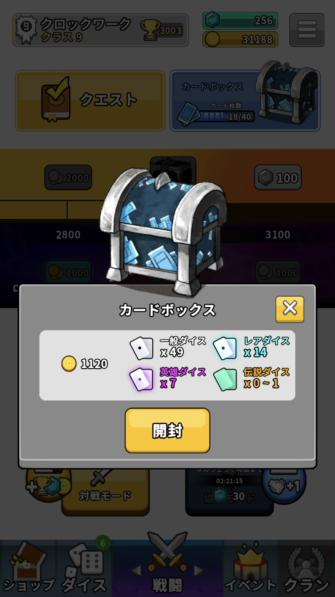

投稿者名：clockwork0806
私が最近はまっているおすすめしたいアプリゲームは
「ランダムダイス」
です。
ランダムダイスはどういうゲームか？
様々な効果を持つダイスを５つ選んでデッキを組み、迫りくる敵を防衛し続けるPvPのタワーディフェンスゲームです。基本的に、相手よりも長い時間を守り切れば勝ちです。
そして、生成されるダイスや、重ねた際に出てくるダイスも基本的にランダムです。さらに、時間経過で出てくるボスもランダムで様々な効果を持っています。なので、勝ててた試合でも負けることもあれば負けそうな試合でも勝てることがあるので最後まで勝負がわからないのが楽しいと思っています。
複数のモード
モードはPvPの対戦モードと協力モードがあり、さらにダイヤを消費してプレイできるランダム闘技場とランダムミラーマッチがあります。
対戦モードは1vs1のPVP対戦で、相手より長く防衛し続けることが勝利条件です。また、このモードの勝敗はレートが関わっており、レートが一定ラインを超えるとクラスが上がり、報酬がもらえます。
そして、友達と対戦することもできます。
協力モードは2人でそれぞれのデッキを使い、本拠地を守るモードです。終わりはおそらくなくて、ウェーブが進むたびに敵が強くなります。また、10ウェーブごとに対戦モードで出てくるボスが出てきます。
そして、守り切ったウェーブ数分がトップページ右上にある「カードボックス」にカウントされ40に達するごとにボックスを開封することができます。また、ためておいて後で引くこともできます。
左画像が対戦モードで右の画像が協力モードです。
「カードボックス」はお金やダイヤ、ダイスを獲得できるので協力モードを遊ばないといけないです。（基本的にダイスの入手先がカードボックスだから）また、対戦モードのクラスに応じてお金の量やダイスの量が増えるので、対戦モードも遊んでおくことをおすすめします。

左の画像が対戦モードがクラス10のカードボックスで右の画像がクラス９のカードボックスです。クラス1違うだけで貰える量が結構違います。
協力モードは1日5回まで挑戦できるが、動画広告をみることで挑戦回数を1回復できます。
そして、友達と協力モードを一緒にプレイすることもできます。
ランダム闘技場はダイス100消費して遊ぶことができます。
ランダム闘技場はルールが対戦モードと同じですが、大きく違うのが、デッキを決めるときに三つのダイスが表示されてその中から1つ決める行為を5回繰り返してデッキを決めます。
デッキを決める時は、画像のように３つ表示されます。
そして、報酬が1勝するごとに、決められた報酬がもらえます。7勝すると、ダイスやゴールドの報酬のほかにダイヤが合計で100もらえるので最初は7勝を目指すのがいいと思います。
報酬は１２勝するまでもらえます。ただし、3敗するとおわってしまいます。
最後にランダムミラーマッチですが、このモードはあまりやらなくていいです。理由は、参加費がダイヤ10使うのですが、報酬がダイヤ18しかなく、1回勝負なので、勝率50％だと損しかしないです。そして、ルールは対戦モードと同じですが、このモードの特徴として相手と同じデッキを使うことになるので、安定して勝ち続けるのが難しいからです。特に初心者だとダイスの効果などを詳しく知らないうえに立ち回りなどを知らないのでダイヤをとかすだけになると思います。
画像のように戦う前にデッキが配られます。このデッキはランダムに作られます。そして、相手と同じデッキです。
強くなるにはどうすればよいか？
強くなるには、協力モードの数をこなして、カードボックスを開けることが大事です。同時に、対戦モードのクラスをあげてカードボックスの中身を少しでも良くすることが大事です。
そして、ダイスのクラスをあげることが大事です。ダイスのクラスをあげるとそのダイスが強くなるだけでなく、ダイス全体のクリティカルダメージが上がります。クリティカルダメージはダイスが攻撃してるときに、確率でおこります。これを上げないと同じデッキを使っていてもダメージの量が全然違うので、使わないダイスもクラスをあげることが大事です。
まとめ
このゲームは、投稿主がとてもはまっていて、1日2時間以上遊んでいてとても面白いです。無料なので皆さんも是非ダウンロードして遊んでみてください。